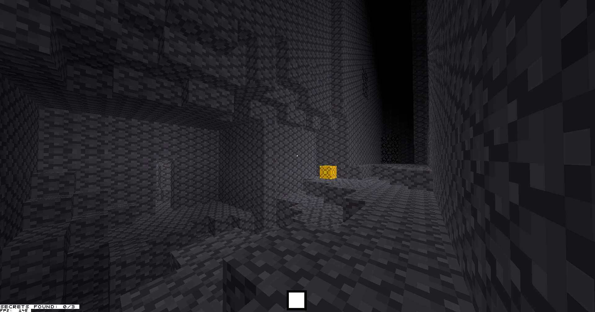
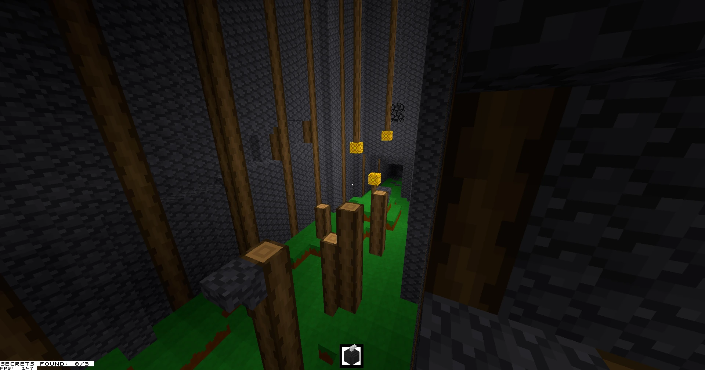
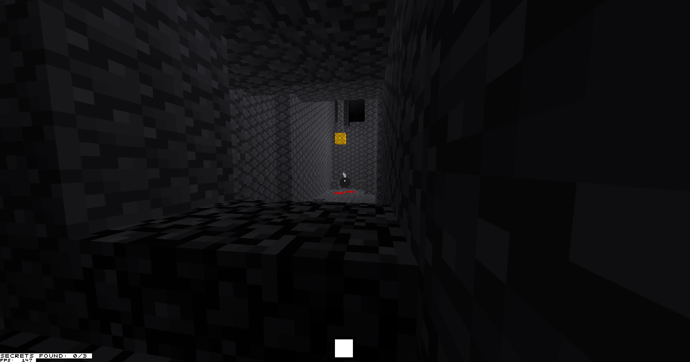

Page published & last updated
Play Voxel dungeon game

A while ago I participated in the Metroidvania Month game jam. I decided to try and make a game with my in-progress blocky game engine, and this had its upsides and downsides. The downside was that I had to spend a considerable amount of time working on the engine, since tech was simply not ready. I didn't have any sort of lighting system implemented, for example!

The upside is essentially the same as the downside: I worked on the engine and made it better. The jam is now long over, but the lighting system is still in my game! I also got to know that for some reason, some users get terrible performance with v-sync enabled. (When I implemented a v-sync toggle after the jam to fix this, I also realized that the game feels a lot more responsive without v-sync... Whoops!)

I've continued to work on my project after the jam, and right now I'm in the process of implementing multiplayer via rollback netcode. It's a lot of fun! I really like rolling my own systems and seeing everything come together :)
If you want to join me in seeing everything come together, check out my streams! I go live every Saturday at 6AM Helsinki time ^^